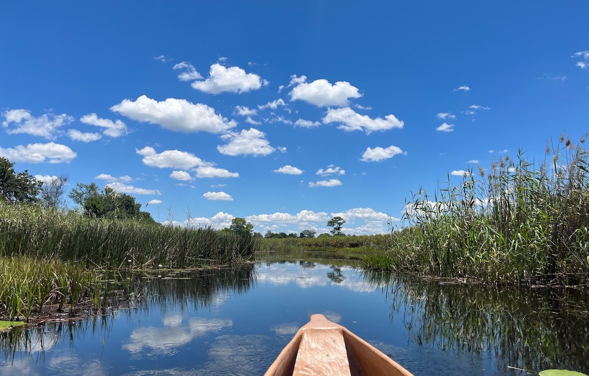

Live → Blog
January 19, 2023

You are poetry Every breath you breathe is art All your wildest dreams, already are
"You Are Light" by Thomas Bergersen and Felicia Farerre plays as I begin to write this blog post. This will most likely be the last regularly posted article as I retire from my public life. This is one of my favorite songs of all time. It has carried me through many a season. Whenever I have felt lost and untethered, it has always helped me recenter. It has always reminded me of the light and beauty within me. I was not always aware of this light and beauty. But gliding on a mokoro a few weeks ago on the Okavango Delta, witnessing one of the most beautiful sights ever, I realized that my own beauty was reflected back to me. This blog, this website, and my online presence, have in some sense been a part of a lifetime of feeling the need to prove and explain myself. My recent trip to my home of origin revealed to me that I had outgrown my public persona.
In my healing work, I have come to learn that this desire to over-explain is rooted in the shame of growing up as the second youngest child in a family of limited means in a village in a so-called third country. Granted my village was quite privileged and my country considered the shining star of everything in Africa, that did not stop me from feeling othered. Thankfully, I was academically gifted: a tool I have leveraged to prove that I too could be and do anything I wanted. What an inspiration my life has been. I have worked hard to transcend the circumstances of my birth and have been endowed with opportunities beyond my imagination. I have not been shy to share these wins and shout them from rooftops. I have shared my life openly in an attempt to prove, mostly to myself, that I was exceptional.
But being in my hometown recently and realizing I was not as famous as I used to be was a sobering experience. I was not expecting to be sad about not being recognizable to every third person at the mall. So you can imagine the disappointment. But on the other side of that disappointment I realized that it was a blessing: I finally saw how much my perception of the legend of me has imprisoned my life. I also saw the ways in which I have been slowly breaking free of this. Finally admitting that it was not my true desire to be the president of Botswana a few years ago was one such step I took towards liberating myself. Today I admit that it is not my desire to be known at scale. Instead I want to be known intimately. This D-list celebrity persona is incompatible with that desire.
Being known intimately and witnessing others just as closely means I will be learning to live life not for the Instagram stories and the blog posts. It means living in the here and the now. Not stuck in some nostalgia of places past or anxious of unknown futures. Being known intimately means witnessing myself unpack my suitcase and use the hotel drawers. It means life updates the normal way: over phone calls, letters, and good old visits. It means finally making time to invest in my dear friends. So while I hang my digital pen, it means now I am learning to cold call my friends just to check on them. If you are my friend, please cold call me. This scheduling calls life is not working. I might finally learn to dance and to skate, but will definitely be reading more.
To everyone who has followed my online journey, I want to thank you so much for keeping up with me. While I think this persona has been ridiculous, I also know that he has been an inspiration. Thank you for encouraging me to tell my story and at times for believing in me so much that it propelled me over the valley of despair. To those who love my writing style, I promise this is not the last you will enjoy my words. I have a book in the works and imagine I will write more over time. I will be keeping my Facebook page, so you can also expect to see my writings on issues I care about out there. While they won't be the same autobiographical and introspective pieces, I promise they will still be worthwhile reads. As Star Sky by Two Steps From Hell plays, I can only say goodbye world and hello self.
Turn that page for me I cannot embrace the touch that you give I cannot find solace in your words I cannot deliver you your love Or caress your soul
← Return to Blog